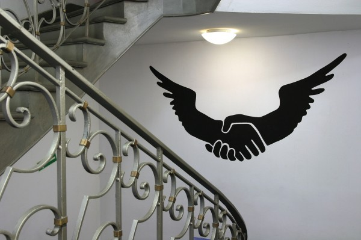
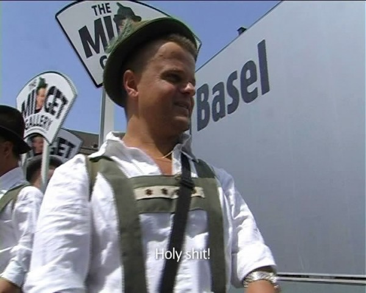
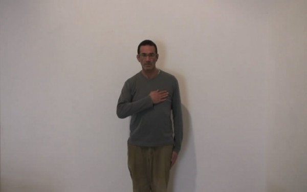

-
Grammars of Identity: Minimal Differences at White Box
by Yulia Tikhonova November 16, 2010
It is perhaps difficult for Americans to appreciate the extent to which national identity is contested throughout the rest of the world. Having maintained one form of government for so long, whose formation coincided with the birth of the nation itself, America has forever been concerned with what it means to be an American, rather than the validity of the identity as such. Consider the term ‘African-American,’ which was adopted in opposition to the more historically militant descriptor ‘black,’ which was in turn opposed to ‘negro,’ for obvious reasons. Without delving too deeply into history, it is possible to appreciate the unique status of the modifier ‘-American,’ not only here, but in other formations: German-American, Jewish-American, even Gay-American. In each case, the addition of the American identity is considered a positive, progressive step; something all the more remarkable given America’s history of intolerance. That the descendants of minority groups aspire to an identity whose history is little more than their oppression speaks to the peculiar appeal of American national belonging. The idea of America somehow contains both an institutional history of exploitation and the struggle against it.
In Europe, however, the situation is much different. While France has existed coherently almost since the the first century, for example, Italy and Germany weren’t unified as nation-states until 1861 and 1871, respectively, and only then amidst multiple claims for the primacy of other, counter-identities, religious, political, and ethnic. Socialism, in particular, as an inter-nationalist class-based identity, has played a central role in the constitution of European nationalism, not least as the common enemy of both German and Italian Fascism. But this same internationalism, when enforced on Eastern Europe by Moscow, reinvigorated the nation as a liberating concept – precisely as America’s capitalist international provoked national liberation movements throughout the third world. Thus what links, in 1956, the outbreak of the Hungarian revolution to Fidel Castro’s landing in Cuba, for all the ostensible opposition of free market theology and dialectical materialism, is this idea of national self-determination. If I dwell on it excessively here, it is only to emphasize the relative novelty of the nation outside of the American imaginary. For it is, to my mind, impossible to appreciate Minimal Differences, the exhibition that closed last month at White Box, without understanding the stakes, as it were, of Eastern European identity. Since the fall of the Berlin Wall, this question of what it is to be European has only become more complicated, particularly for Poles, Czechs, Slovaks and those others who have suffered at the hands of both western nationalism and the eastern international. Minimal Differences elegantly considers how these problems have fueled social debates and become a field of artistic inquiry.
In 2004, when the European Union was formed, the disparities between Poland, the Czech Republic, Estonia, Slovenia, Slovakia and other countries became critical. Differences of nationality, ethnicity, religion, language, politics, and economics, formerly homogenized beneath the iron curtain, reemerged as these countries sought to join the nascent Union.
Such complex relationships became an endless source of investigation, as artists presented an array of differences filtered through their own, critical perception. Paweł Althamer, Azorro, Vesna Bukovec, Jirí Cernický, Oskar Dawicki, Katarzyna Kozyra, Zbigniew Libera, Joanna Malinowska and Christian Tomaszewski, Anna Molska, R.E.P., Slaven Tolj, Marek Wasilewski, Julita Wójcik, Martin Zet are each from countries of the former Soviet Bloc, but now partake in an ostensibly capitalist economy. Minimal Differences offers a retrospective, of sorts, examining personal versions of late 1990s history, taken with an edge of humor. In mocking the contradictions and peculiarities inflicted on them by the past, these artists display a kind of solidarity as cultural workers, as their common identity as artists is wielded against the inconsistent multiplicity of history.
Pawel Althamer, Slaven Tolj, R.E.P group and Zbignev Libera comment on the differences that originated within the political opposition between East and West. In Teledysk (Videoclip) Pawel Althamer from Poland gives us a history lesson, staging the antipathy between the younger generation and the older Poles who witnessed their country’s transition to a market economy. The differences are reflected in a set of care-free attitudes towards the past, flavored with a cynicism towards the future.
The Ukrainian group R.E.P (Revolutionary Experimental Space) presented a wall mounted vinyl cut-out formed by two shaking hands that appear as the wings of an eagle. This hand-shake takes its model from the Ukrainian coat of arms, satirizing both the history of socialist iconography and the shady handshake deals that are the hallmark of Ukraine’s new class of political oligarchs.
The exhibition also introduces artists who live outside of Europe and present a slightly different set of reflections. Johanna Malinovwska and Christian Tomaszewski are emerging artists who address issues of dress codes and representations of the future. In the series of photographs In Mother Earth Sister Moon the artists scramble references to the Soviet space program with sci-fi films and the peculiarities of Soviet dress.
The young Polish artist, Anna Molska, who was included in the Younger Than Jesus exhibition last year, revisits the legacy of modernism. In her video Tanagram two men are trying to assemble large pieces of a puzzle into distinctive shapes. The suprematist grammar of the constructions, the Chinese origin of the puzzle, the Russian song playing in the background, and the incomprehensible dialogue taken from a Polish-Russian phrase book offer a vivid portrait of the overdetermined legacy of abstract art, claimed by many nations but owned by none.
Katarzyna Kozyra’s video The Midget Gallery buys artworks offers a sort of rebuke to the international market. Her protagonists, a group of dwarfs from Poland, buffoon the de-facto regulation of the art market by certain players. Personally, I find Kozyra’s engagement of little people ethically problematic: the metaphor between art market’s spectacle and the those stereotyped as freaks seems a bit clumsy. The artist over-extends her power by utilizing demeaning clichés.
Previously I wrote about paintings by Dmitry Gutov an artist who marked historical difference by painting quotes from Karl Marx in a way that almost created a brand out of Marx’s name. Similarly Slaven Tolj from Slovenia plays on the similarities between gestures of a salute. The artist endlessly performs different variations of a greeting that was used both in parades across the Soviet Bloc and also in Nazi Germany. Tolj’s video documentation of his performance Patriot suggests that recognition and display of dominance maintains a certain consistency across contexts.
The title Minimal Differences is a pun. Socialism, the common historical denominator for each of these considerations, vigorously suppressed difference and identity. Once the state-system collapsed, however, many of these ghostly demarcations re-emerged, sometimes with a vengeance, as in the former Yugoslavia. But to their credit, these artists also make fun of the peculiarities, and the way in which differences were instrumentalized by propaganda and perpetuated by ideology. The exhibition’s co-curator Denise Carvalho has said that “ the exhibition shows a kind of irony on the issue of difference. So, the idea of difference or sameness is in the show something to be looked at as absurd.” Monika Szewczyk, the other co-curator, has said that she purposefully attempted to highlight the question of artistic representation and what it means for past histories.
By mixing more established and emerging artists Minimal Differences revives the twentieth anniversary of the Fall of Berlin Wall from two years ago. It is one of many curatorial efforts to survey art’s ongoing fascination with identity. In America, this exhibition presents a rare view of many of the strongest artists currently arriving from Eastern Europe. Being Eastern European certainly means to carry the marks of many differences, and those these might be minimal, they are often crucial.